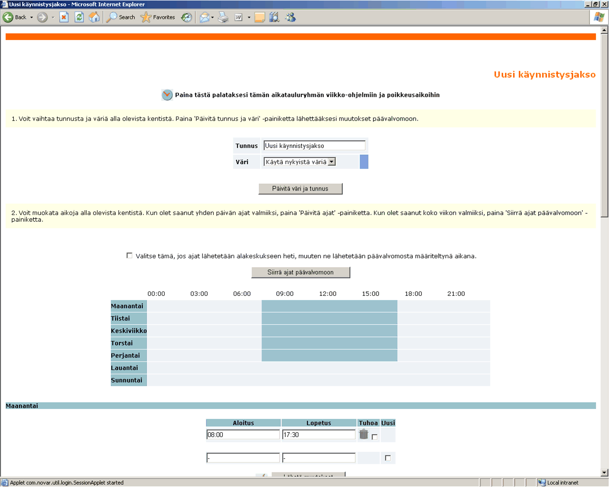

Napsauta Paina tästä siirtyäksesi tämän aikatauluryhmän viikko-ohjelmiin.
Napsauta Uusi viikko-ohjelma. Avautuva näyttö on alla näkyvän kaltainen.

Syötä Tunnus-kenttään mallin nimi.
Napsauta Väri-kentässä väriä, jota käytetään näitä aikoja käyttävien päivien esittämiseen.
Napsauta Päivitä väri ja tunnus.
Syötä sarakkeiden Aloitus ja Lopetus kenttiin kunkin jakson alkamis- ja päättymisajat.
IQ3-säätimille voidaan lisätä jaksoja valitsemalla valintaruutu Uusi-sarakkeesta ja syöttämällä sitten sarakkeisiin Aloitus ja Lopetus uuden jakson alkamis- ja päättymisajat, ja napsauttamalla sitten Lähetä muutokset. Ei-toivotut jaksot voidaan poistaa valitsemalla valintaruutu kuvakkeen  vierestä ja napsauttamalla sitten Lähetä muutokset.
vierestä ja napsauttamalla sitten Lähetä muutokset.